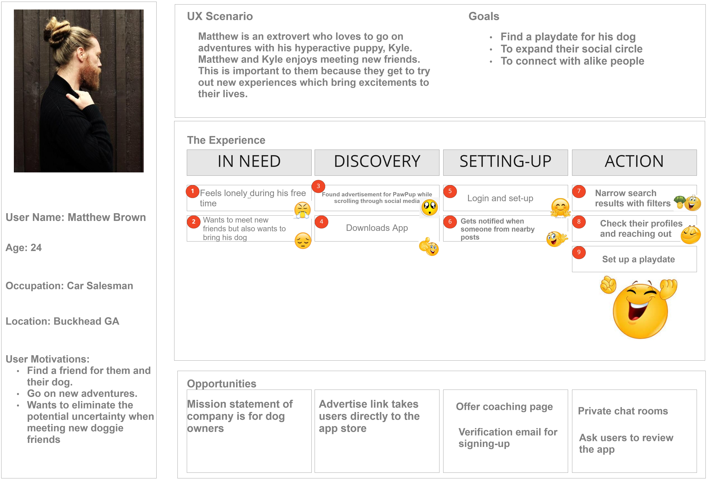

- Team
- Bao Tran, Joelle Gregory, Kristen Talbot, Jeffrey, and I
- My Role
- User Research, Competitive Analysis, Interviews, Usability Testing, Wireframing, Team motivator
- Goal
- Create a mobile payment and loyalty program solution for the pre-existing Foursquare app.
- Tools Used
- Typeform, Omnigraffle, Illustrator, Flinto, Keynote, PowerPoint, Paper Prototyping .
The Challenge
As there many apps out there already attempting to conquer the mobile payment, check-in and loyalty program market, we knew we had to be very thorough in our competitive analysis. By comparing everything from google wallet, to Paypal, Square, Venmo and even service apps such as Starbucks and Uber, we were to get a very clearly of what kind of technology was available and how efficient it was. The winner of the lot was definitely Uber which had the least amount of steps in the payment process. We also liked the check-in software of the company perka that used a minimal amount of hardware in store.

Click here to download Competitive Analysis Chart
Researching the User

We also all contributed to a user interview research plan where we formulated 20 or so open-ended questions surrounding their opinions on pets, the idea of Pawpup, and any relevant, potentially helpful information. Below are the notes taken from the user interviews and grouped up under similar categories:

Defining the User
- Sketching & Wireframing
We first brainstormed ideas of who might our user be using a proto-persona which we could then evolve into a user persona once we found more information on our users. Through one-on-one interviews with potential users and information from the survey, I introduce to you, Matthew Brown.

Our user scenario and journey map focuse on Matthew Brown, a car salesman in his mid-20s who is currently unsatisfied with his social life and skees out new opportunities to make friends. He also has a dog who he feels he has not paid attention to as much as he’d like so he thinks it would be convenient if he could find someone who is interested in making friends with same interests like exercising with their dogs. This leads him to find PawPup through an advertisement he sees online, of which he downloads and makes a match with another user, once they go on their first playdate, they end up organizing reoccurring playdates and a meaningful connection is made.

Ideating
- User Flow

Prototyping

- Low-Fidelity Prototype
- This iteration was comprised of our rough sketches. After our initial ideas from design studio, we had a more solid idea of how our app would function and what it would look like aesthetically. All 3 members of the team worked on part of the flow and then we combined our wireframes in Flinto for our first prototype.

- High-Fidelity Prototype
- After testing on 7 people who were a mix of classmates, family members and friends, we realized a few pain points of the design: people wanted the tipping prompt to come later in the billing process, and they didn’t feel secure with the idea of auto check-in, a feature that we eliminated in this second iteration. We also ventured into the street to test it on a complete stranger. Other than a couple of details, he was able to navigate our design with much ease.
- Iteration 1
- In this near final version, we created wireframes at a very high level of fidelity that attempted to match the Foursquare aesthetic. After testing on another 5 people, we cleaned up our tipping system even further, as well as our pay by points summary. We also added other means of getting to the "Pay by Foursquare" Check-out process in order to take in account various user scenarios.
- Iterations 2 & 3
- After testing on 7 people who were a mix of classmates, family members and friends, we realized a few pain points of the design: people wanted the tipping prompt to come later in the billing process, and they didn’t feel secure with the idea of auto check-in, a feature that we eliminated in this second iteration. We also ventured into the street to test it on a complete stranger. Other than a couple of details, he was able to navigate our design with much ease.

Result!
This entire process lead us to a 4th clickable prototype that answered the needs and wants of our users as well as took into account all of the usability feedback. Although we would still like to add more scenarios as well as develop the business side of the product, we did feel we acheived our goal of creating a trustworthy, enjoyable and easy to use app that would make current Foursquare users happy as well as entice new ones to adopt it.